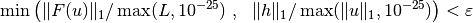
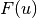
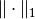
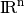
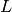
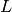
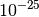
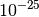

Predefined solvers¶
Although it will be more convenient to build a specific solver for some problems, a generic solver is available to test your models quickly. It can also be taken as an example to build your own solver. It is defined in src/getfem/getfem_model_solvers.h and src/getfem_model_solvers.cc and the call is:
getfem::standard_solve(md, iter);
where md is the model object and iter is an iteration object from Gmm++. See also the next section for an example of use.
Note that SuperLU is used as a default linear solver on “small” problems. You can also link MUMPS with GetFEM++ (see section Linear algebra procedures) and use the parallel version. For nonlinear problems, A Newton method (also called Newton-Raphson method) is used.
Note also that it is possible to disable some variables (with the method md.disable_variable(varname) of the model object) in order to solve the problem only with respect to a subset of variables (the disabled variables are the considered as data) for instance to replace the global Newton strategy with a fixed point one.
Let us recall that a standard initialization for the iter object is the folowwing (see Gmm++ documentation on Iterative solvers):
gmm::iteration iter(1E-7, 1, 200);
where 1E-7 is the relative tolerance for the stopping criterion, 1 is the noisy option and 200 is the maximum number of iterations. The stopping criterion of Newton’s method is build as follows. For a relative tolerance  , the algorithm stops when:
, the algorithm stops when:

where  is the residual vector,  is the classical 1-norm in ,  is the search direction given by Newton’s algorithm,  is the norm of an estimated external loads (coming from source term and Dirichlet bricks) and
is the search direction given by Newton’s algorithm,  is the norm of an estimated external loads (coming from source term and Dirichlet bricks) and  is the current state of the searched variable. The maximum taken with  is to avoid pathological cases when and/or are vanishing.
is the current state of the searched variable. The maximum taken with  is to avoid pathological cases when and/or are vanishing.

前のトピックへ
Source term bricks (and Neumann condition)
次のトピックへ
Example of a complete Poisson problem
Download
Main documentations
- GetFEM++ User documentation
- Python Interface
- Matlab Interface
- Scilab Interface
- Gmm++
- GetFEM++ project